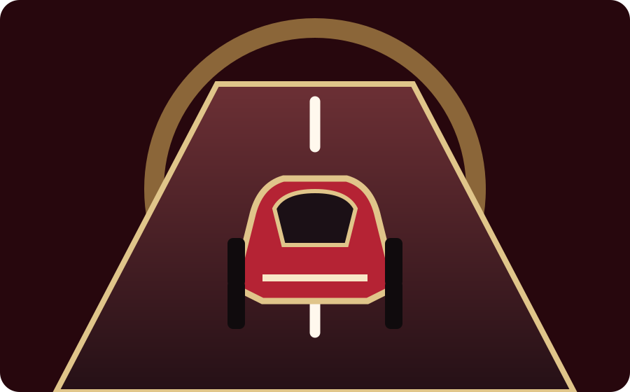
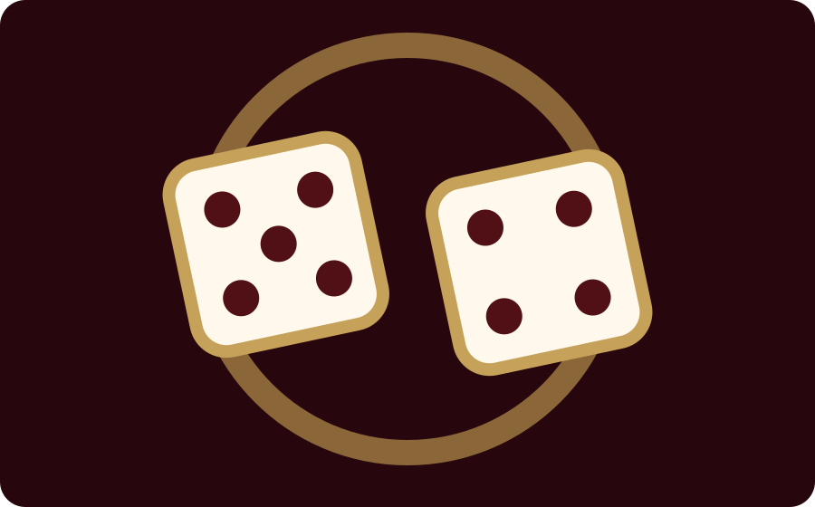

01 / PYTHON · ARTIFICIAL INTELLIGENCE
Pole Position
An AI game based off the Atari game "Pole Position." The purpose of the project is to test Gemini's capabilities to replicate older games.
Download Python sourceProgramming and application projects that demonstrate my interest in artificial intelligence, software development, and practical problem-solving.

01 / PYTHON · ARTIFICIAL INTELLIGENCE
An AI game based off the Atari game "Pole Position." The purpose of the project is to test Gemini's capabilities to replicate older games.
Download Python source
02 / PYTHON · ARTIFICIAL INTELLIGENCE
A group project completed through Python. The purpose was to test my group's knowledge of basic Python coding skills, and we recreated the game Craps as the result of the project.
Download Python source03 / CURRENT PROJECT · LLM APPLICATION
This is my current project. Egor and I are developing our own fitness app using large language models (LLMs) and raw data. The goal is to understand how a front-end application works with an LLM providing back-end support. We plan to use Google AI Studio and Google Cloud Console to build the app.
Download project proposal